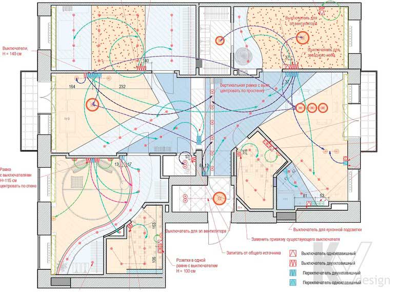

План осветительного оборудования с привязкой к выключателям

На цьому кресленні поверх плану з розміщенням освітлювального обладнання наноситься схема розміщення вимикачів, для кожного з яких в примітках вказується висота розташування, а також дається прив'язка щодо стіни і джерела освітлення. Співвіднесення освітлювальних приладів з вимикачами виконується на розсуд дизайнера і з урахуванням технічних умов. Замовник, отримавши готову схему, може скорегувати її, виходячи зі своїх звичок і запитів.
Рожевим кольором на плані відзначаються звичайні вимикачі, призначені для включення і виключення конкретного освітлювального приладу. Синім кольором позначені перемикачі, вони ж прохідні вимикачі, які дозволяють створити систему управління одним джерелом світла з різних частин приміщення. Крім того, на подібних кресленнях, при необхідності, вказуються місця установки диммеров і датчиків руху.